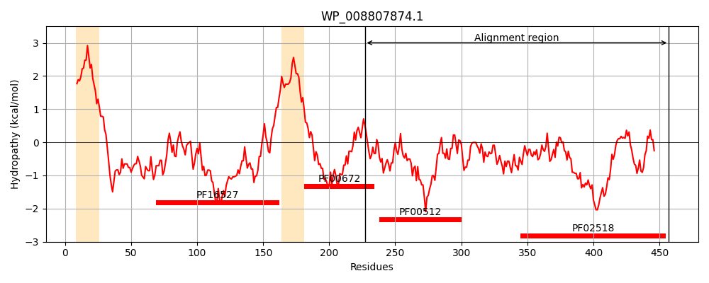
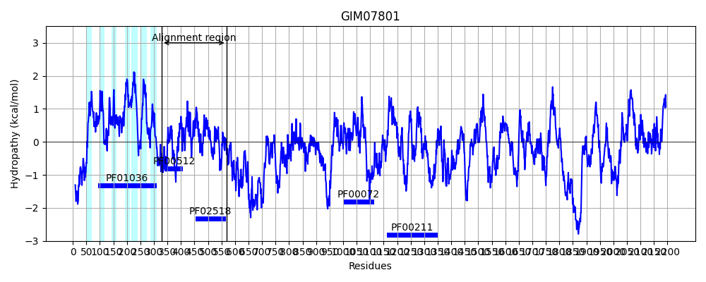
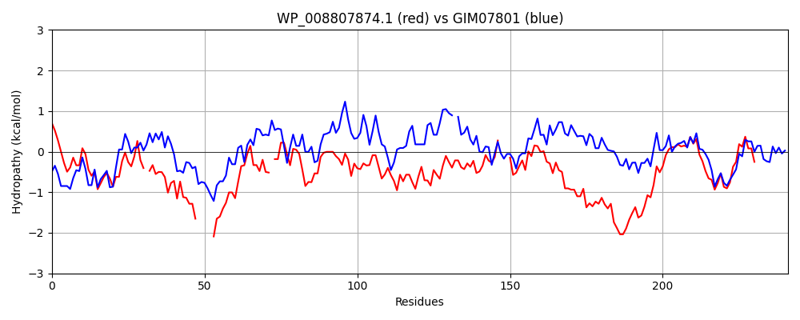

Hit Accession: GIM07801
Hit TCID: 3.E.1.5.3
Hit Description: gnl|BL_ORD_ID|4967 gnl|TC-DB|GIM07801.1|3.E.1.5.3 hypothetical protein Vretimale_11876 [Volvox reticuliferus]
Mach Len: 241
e:0.000000
Query TMS Count : 2
Hit TMS Count: 7
TMS-Overlap Score: 0.800000
Predicted Substrates:None
BLAST Alignment:
Score: 206 , Bit scores: 83 bits, E-value: 4.6e-17, Alignment length: 241, Percentage identity: 27
Query: 227 QMVTALERMMTSQQRLLSDISHELRTPLTRL-QLGTALLRRRSGESKE-----LERIETEAHRLDSMINDLL-VMSRNQAKNALVSETVKANQLWGEVLDNAAFEAEQMGKSFTVEYPPGPWPLYGNPNALESALENIVRNALRYSH---TKISVSFSVDKDGITVNVDDDGPGVSPEDREQIFRPFYRTDEARDRESGGTGLGLAIVETAIQQHRGWVKADDSPLGGLRLTLWLPLYKRT 457
+++ L +T + + +S +SHELRTPL + QL AL+R GE ++ I+ ++ L ++IND+L V + + K + E + V+D A + P P+ + ++ L N+ NAL+++H + V+ + D +T+ V D G G++ + I+ F + D + R+ GGTGLGL+IV+ ++ H G ++ + G T+ LP+ + T
Sbjct: 329 RIIQELRDAVTRKDQFMSLMSHELRTPLNGIIQLSDALVRGAGGEMNAKGQHFVKTIKNSSNHLLNIINDILDVAALKEGKLTIKHELCSLAKAVEHVVDIVTPLARKDVVIQRFVDPRTPFIIADFSRVIQ-ILYNLAGNALKFTHHGHVSVRVAPTADGSAVTLQVADTGIGIATDRINSIWGAFEQVDMSVTRKYGGTGLGLSIVKQLVEAHEGQIEVQSAEGQGTTFTVTLPVLQTT 568 | Protein Hydropathy Plots: |
|---|
|  |  |
Pairwise Alignment-Hydropathy Plot:
|
|---|
|  |